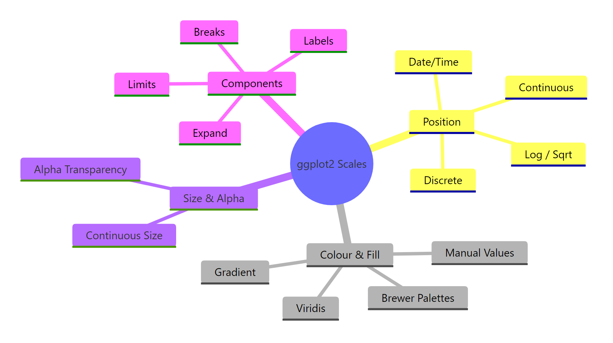
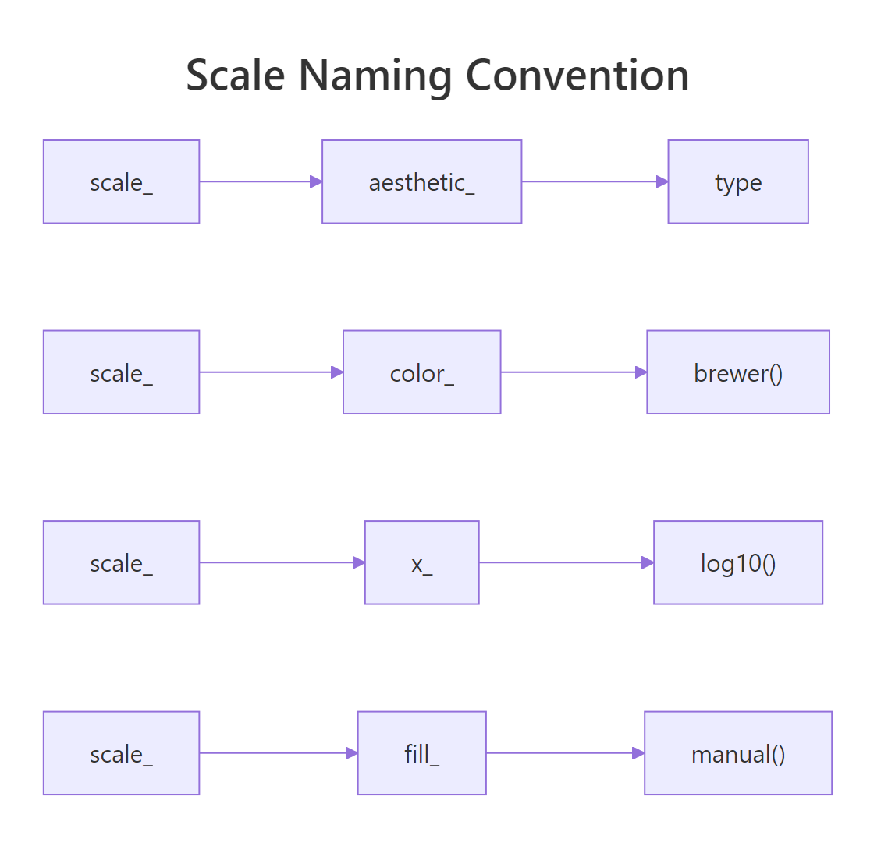
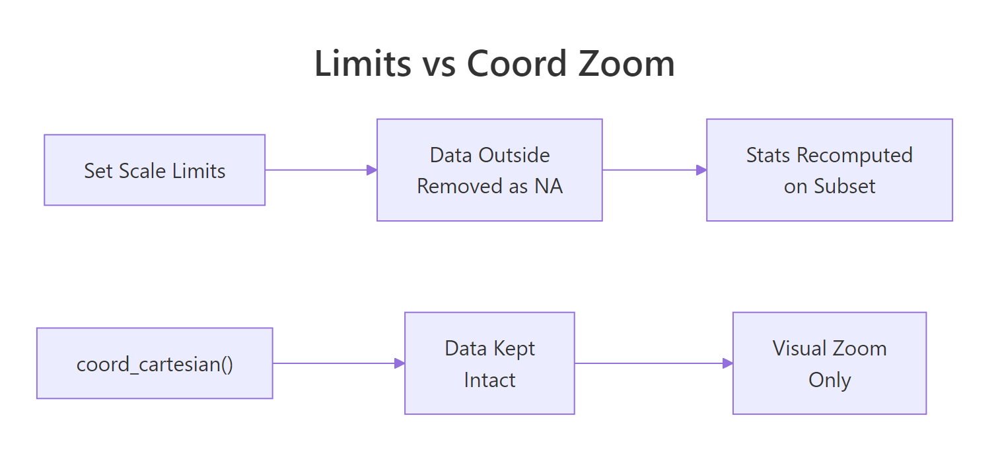

ggplot2 Scales: Control Every Axis, Colour, and Size — The Full Reference
Scales control how ggplot2 maps data values to visual properties like position, colour, size, and transparency. Mastering them gives you complete control over every axis, legend, and colour palette in your plots.
Introduction
Every time you write aes(x = ..., y = ...), ggplot2 silently picks a default scale behind the scenes. Most of the time, those defaults work fine. But when you need log-transformed axes, custom colour palettes, formatted currency labels, or exact axis limits, you need to take control of scales yourself.
Scales are the bridge between your data and the visual output. They translate a numeric column into an x-axis position, a factor column into a colour, or a continuous variable into point size. Every aesthetic you map inside aes() has a corresponding scale, whether you see it or not.
In this tutorial, you will learn the scale naming convention, position scales for continuous and discrete axes, log and sqrt transformations, colour and fill scales (Brewer, manual, gradient, viridis), size and alpha scales, and the shared components that all scales have in common: breaks, labels, limits, and expand. All code runs directly in your browser — no setup required.

Figure 1: The four families of ggplot2 scales and their shared components.
This base plot uses the default scales for both axes. Every section below shows you how to override those defaults.
How Does the ggplot2 Scale Naming Convention Work?
Every scale function in ggplot2 follows a three-part naming pattern: scale_ + the aesthetic name + the scale type. Once you know this pattern, you can guess the right function for any situation without looking it up.
For example, scale_x_continuous() controls a continuous x-axis. scale_color_brewer() applies a Brewer palette to the colour aesthetic. scale_fill_manual() lets you hand-pick fill colours.

Figure 2: Every scale function follows the scale_ + aesthetic_ + type pattern.
The explicit version does nothing new here, but it shows you exactly where to plug in customisations. Every argument you pass to scale_x_continuous() — breaks, labels, limits, expand — overrides the defaults.
scale_color_viridis_d(), scale_y_log10(), scale_fill_gradient2(). No memorisation needed.The most common aesthetics are x, y, color (or colour), fill, size, and alpha. The most common types are continuous, discrete, manual, brewer, log10, sqrt, reverse, gradient, gradient2, and viridis_c/viridis_d.
Try it: What scale function would you use to apply a manual colour palette to the color aesthetic? Write it as a call with values = c("red", "blue").
Click to reveal solution
Explanation: scale_color_manual() follows the pattern: scale_ + color_ + manual. You need one colour per factor level (mtcars has 3 cylinder groups).
How Do You Customise Position Scales for Continuous and Discrete Axes?
Position scales control the x-axis and y-axis. For numeric data, you use scale_x_continuous() and scale_y_continuous(). For categorical data, you use scale_x_discrete() and scale_y_discrete(). Both share the same core arguments: breaks, labels, limits, and expand.
Let's start with continuous axes. The breaks argument sets where tick marks appear. The labels argument controls what text is printed at each tick. The limits argument defines the axis range.
The breaks argument accepts a numeric vector or a function. The labels argument can be a character vector (same length as breaks) or a labelling function from the scales package.
For discrete axes, you can reorder and relabel categories directly in the scale.
The expand argument controls the padding between your data and the axis edges. By default, ggplot2 adds 5% padding on each side for continuous axes. Use expansion() to change this.
The mult argument adds proportional padding. Setting the lower bound to 0 removes the gap below the bars, while keeping a small 5% cushion at the top.
limits = c(15, 30) in a scale, ggplot2 converts out-of-bounds points to NA before computing statistics. If you just want to zoom in visually, use coord_cartesian(ylim = c(15, 30)) instead — it keeps all data intact.
Figure 3: Setting limits removes data; coord_cartesian() zooms without data loss.
Try it: Create a bar chart of mtcars cylinder counts using geom_bar(). Format the y-axis with label_comma() and remove the bottom padding with expansion().
Click to reveal solution
Explanation: label_comma() adds thousand separators (not visible here with small counts, but essential for large values). expansion(mult = c(0, 0.05)) removes bottom padding.
How Do You Apply Log, Sqrt, and Reverse Transformations?
When your data spans several orders of magnitude, a linear axis compresses most of your points into a tiny region. Log transformations spread the data evenly by working on a multiplicative scale instead of an additive one.
The simplest approach is scale_x_log10() or scale_y_log10(). These apply a base-10 logarithm to the axis.
On the log-log scale, the relationship between carat and price looks nearly linear. This tells you that price scales as a power of carat weight — something the linear plot hides.
You can also use scale_x_sqrt() for a milder transformation, or scale_x_reverse() to flip the axis direction.
For cleaner tick labels on log scales, use breaks_log() from the scales package. This places breaks at powers of 10.
The breaks_log() function places ticks at sensible powers, and label_dollar() formats the y-axis as currency.
Try it: Create a scatter plot of diamonds with carat on the x-axis and price on the y-axis. Apply scale_y_log10() and format the labels with label_dollar().
Click to reveal solution
Explanation: scale_y_log10() transforms the axis, and labels = label_dollar() formats each break as a dollar amount.
How Do You Control Colour and Fill Scales?
Colour scales are where ggplot2 really shines. There are two aesthetics to know: color (outlines and points) and fill (area fills in bars, boxes, and polygons). Each has discrete and continuous variants.
For discrete data, the most popular choice is scale_color_brewer(), which uses the ColorBrewer palettes designed by cartographer Cynthia Brewer. These palettes are perceptually balanced and many are colourblind-safe.
The palette argument selects a specific palette. Good choices include "Set1" (bold), "Set2" (muted), "Dark2" (dark), "Paired" (12 colours), and "Pastel1" (soft). For sequential data, try "Blues", "Greens", or "YlOrRd".
When you need exact colours, use scale_fill_manual() or scale_color_manual() with a named vector.
The named vector maps each factor level to a specific hex colour. This is essential when you have brand colours or need consistent colours across multiple plots.
For continuous colour data, use gradient scales. scale_color_gradient() creates a two-colour gradient, and scale_color_gradient2() creates a diverging three-colour gradient with a midpoint.
The diverging palette highlights which cars are above or below the median fuel efficiency.
For the best perceptual uniformity and colourblind safety, use the viridis scales: scale_color_viridis_d() for discrete data and scale_color_viridis_c() for continuous.
The option argument selects the viridis variant: "viridis" (default), "magma", "inferno", "plasma", or "cividis" (optimised for colour vision deficiency).
RColorBrewer::display.brewer.all() to see every available palette grouped by type (sequential, qualitative, diverging).scale_colour_brewer() and scale_color_brewer() are identical.Try it: Create a boxplot of iris with Species on the x-axis, Sepal.Length on the y-axis, and a manual fill scale using three colours of your choice.
Click to reveal solution
Explanation: Named vectors ensure each species gets the exact colour you intend, regardless of factor level order.
How Do You Control Size and Alpha Scales?
Size and alpha (transparency) scales map continuous values to point size or opacity. They are less common than colour scales but essential for bubble charts and overplotted scatter plots.
The key distinction is between scale_size() and scale_size_area(). The default scale_size() maps values to the point radius. This means a value twice as large gets a circle with twice the radius — but four times the area. That distorts perception. Use scale_size_area() instead, which maps values to circle area so that visual proportions are honest.
With scale_size_area(), a car with 200 hp has a circle with twice the area of a car with 100 hp. This is visually honest. The max_size argument controls the largest bubble's diameter in mm.
For overplotted data, scale_alpha_continuous() lets you map a variable to transparency. Points in dense regions become semi-transparent, revealing the underlying distribution.
The range argument in scale_alpha_continuous() sets the minimum and maximum opacity. A range of c(0.1, 0.9) ensures even the faintest points are still visible.
scale_size() for bubble charts makes small values look disproportionately tiny and large values disproportionately huge. Always use scale_size_area() when size should represent a quantitative value.Try it: Create a bubble chart of mtcars with disp on x, mpg on y, and hp mapped to size using scale_size_area(). Set max_size = 12.
Click to reveal solution
Explanation: scale_size_area() ensures the visual area of each bubble is proportional to horsepower, making the chart perceptually accurate.
Common Mistakes and How to Fix Them
Mistake 1: Using limits to zoom instead of coord_cartesian()
This is the most common scale mistake. Setting limits inside a scale function removes data outside the range before stats are computed.
❌ Wrong:
Why it is wrong: Six data points are converted to NA. The regression line is fitted to the remaining data, giving a different slope than the full dataset.
✅ Correct:
Mistake 2: Using scale_size() instead of scale_size_area() for bubble charts
❌ Wrong:
Why it is wrong: A circle with 3x the radius has 9x the area. Readers perceive area, not radius, so the 300hp car looks far too large relative to a 100hp car.
✅ Correct:
Mistake 3: Forgetting to load the scales package
❌ Wrong:
Why it is wrong: Functions like label_dollar(), label_comma(), label_percent(), and breaks_log() live in the scales package. ggplot2 imports some scales functions, but the label helpers need an explicit library(scales).
✅ Correct:
Mistake 4: Passing character strings as breaks on a continuous axis
❌ Wrong:
Why it is wrong: Continuous scales expect numeric break positions. If you want text labels at specific positions, set numeric breaks and character labels separately.
✅ Correct:
Practice Exercises
Exercise 1: Polished scatter with Brewer palette and formatted axes
Create a scatter plot of mtcars with wt on x, mpg on y, and factor(cyl) mapped to colour. Use scale_color_brewer() with the "Dark2" palette. Set y-axis breaks at every 5 units and label the x-axis as "Weight (1000 lbs)". Remove the bottom y-axis padding.
Click to reveal solution
Explanation: Three separate scale functions control colour, x-axis, and y-axis independently. Each scale only affects its own aesthetic.
Exercise 2: Log-scaled bubble chart with viridis fill
Using the diamonds dataset, create a scatter plot of carat (x) vs price (y). Map cut to colour using scale_color_viridis_d(). Apply log10 to both axes with dollar-formatted y labels and comma-formatted x labels. Add a labs() title of "Diamond Price by Carat and Cut".
Click to reveal solution
Explanation: Log10 scales reveal the linear relationship on log-log axes. Viridis is colourblind-safe and perceptually uniform. Label functions format the tick text without affecting the underlying data.
Exercise 3: Diverging gradient heatmap
Create a correlation heatmap of mtcars using geom_tile(). Compute the correlation matrix, reshape it to long format, and map the correlation value to fill. Use scale_fill_gradient2() with blue for negative, white for zero, and red for positive correlations.
Click to reveal solution
Explanation: scale_fill_gradient2() creates a diverging palette anchored at zero. The limits = c(-1, 1) ensures the colour range spans the full correlation range. Reshaping the matrix to long format lets ggplot2 map rows and columns to aesthetics.
Putting It All Together
Let's build a publication-quality scatter plot that combines multiple scale customisations in a single chart. We will use log axes, a Brewer colour palette, formatted labels, custom breaks, and a polished legend.
This chart uses four different scales at once: scale_x_log10() for the x position, scale_y_log10() for the y position, scale_color_brewer() for the colour aesthetic, and scale_size_area() for the size aesthetic. Each scale independently controls its own aesthetic without interfering with the others.
Summary
| Scale Family | Key Functions | When to Use |
|---|---|---|
| Position (continuous) | scale_x_continuous(), scale_y_continuous() |
Customise breaks, labels, limits on numeric axes |
| Position (discrete) | scale_x_discrete(), scale_y_discrete() |
Reorder or relabel categories |
| Position (transform) | scale_x_log10(), scale_x_sqrt(), scale_x_reverse() |
Spread skewed data or flip axis direction |
| Colour (discrete) | scale_color_brewer(), scale_color_manual(), scale_color_viridis_d() |
Map categories to distinct colours |
| Colour (continuous) | scale_color_gradient(), scale_color_gradient2(), scale_color_viridis_c() |
Map numeric values to colour gradients |
| Fill | scale_fill_*() |
Same as colour, but for area fills (bars, boxes, tiles) |
| Size | scale_size_area() |
Bubble charts with honest area encoding |
| Alpha | scale_alpha_continuous() |
Reduce overplotting by mapping transparency |
| Shared arguments | breaks, labels, limits, expand, name |
Work across all scale types |
The golden rule: every aesthetic you map in aes() has a corresponding scale. Learn the naming pattern scale_<aesthetic>_<type>(), and you can control any visual property in ggplot2.
FAQ
What is the difference between limits in a scale and coord_cartesian()?
Setting limits inside a scale function (e.g., scale_y_continuous(limits = c(10, 30))) removes data outside the range before stats are computed. coord_cartesian(ylim = c(10, 30)) performs a visual zoom — all data is kept, and stats are computed on the full dataset. Use coord_cartesian() when you want to zoom without affecting fitted lines or summaries.
How do I remove the gap between my data and the axes?
Use the expand argument with expansion(mult = 0) or expansion(add = 0). For bar charts, expansion(mult = c(0, 0.05)) removes the bottom gap while keeping a small top cushion. This makes bars start exactly at the axis baseline.
Can I use different scales for different facets?
By default, all facets share the same scales. Use facet_wrap(~ variable, scales = "free") to let each facet have its own axis range. You can also use scales = "free_x" or scales = "free_y" for just one axis. However, you cannot apply completely different scale types per facet.
How do I reverse a colour gradient?
Use direction = -1 inside Brewer or viridis scales: scale_color_brewer(direction = -1). For gradient scales, swap the low and high arguments. For viridis, use scale_color_viridis_c(direction = -1).
Why does scale_size() make small values look too big compared to large values?
scale_size() maps values to the circle radius. Doubling the radius quadruples the area. Since humans perceive area (not radius), a value of 200 looks 4x bigger than 100 instead of 2x. Switch to scale_size_area(), which maps values to area directly. A value of 200 will have exactly twice the visual area of 100.
References
- Wickham, H. — ggplot2: Elegant Graphics for Data Analysis, 3rd Edition. Chapters 10-11: Position Scales and Colour Scales. Link
- ggplot2 documentation — scale_continuous reference. Link
- ggplot2 documentation — scale_colour_brewer reference. Link
- scales package documentation — Label functions reference. Link
- Brewer, C. — ColorBrewer: Color Advice for Cartography. Link
- Wilke, C. — Fundamentals of Data Visualization. Chapter 4: Color Scales. Link
- Wickham, H. & Grolemund, G. — R for Data Science, 2nd Edition. Chapter 12: Communication. Link
- ggplot2 documentation — scale_manual reference. Link
Continue Learning
Now that you can control every axis, colour, and size in your plots, explore these related tutorials:
- ggplot2 Theme Customisation — Change fonts, backgrounds, gridlines, and overall plot appearance
- Top 50 ggplot2 Visualisations — The masterlist of chart types with complete code for each
- ggplot2 Quick Reference — A compact cheat sheet of the most common ggplot2 functions